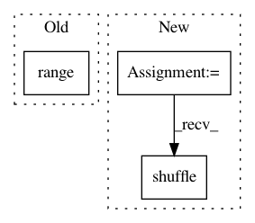

2dff0ba91eb89b01b0b312956226342806a6a519,smac/smbo/local_search.py,LocalSearch,maximize,#LocalSearch#Any#,48
Before Change
// by randomly drawing configurations
changed_inc = False
for i in range(self.n_neighbours):
s_time = time.time()
neighbor = get_random_neighbor(incumbent, seed=i)
neighbor_ = impute_inactive_values(neighbor)
After Change
changed_inc = False
all_neighbors = get_one_exchange_neighbourhood(incumbent, seed=local_search_steps)
random.shuffle(all_neighbors)
for neighbor in all_neighbors:
s_time = time.time()
neighbor_ = impute_inactive_values(neighbor)
In pattern: SUPERPATTERN
Frequency: 3
Non-data size: 3
Instances
Project Name: automl/SMAC3
Commit Name: 2dff0ba91eb89b01b0b312956226342806a6a519
Time: 2016-01-23
Author: lindauer@informatik.uni-freiburg.de
File Name: smac/smbo/local_search.py
Class Name: LocalSearch
Method Name: maximize
Project Name: nilearn/nilearn
Commit Name: 193497df33fc9982c658f7ee19d36488479f9f96
Time: 2015-12-03
Author: elvis.dohmatob@inria.fr
File Name: nilearn/tests/test_extmath.py
Class Name:
Method Name: test_fast_abs_percentile
Project Name: IBM/adversarial-robustness-toolbox
Commit Name: 8f747275eefcab1439804f8bafd7997e0abdf37a
Time: 2020-04-01
Author: beat.buesser@ie.ibm.com
File Name: art/attacks/evasion/adversarial_patch/adversarial_patch_tensorflow.py
Class Name: AdversarialPatchTensorFlowV2
Method Name: generate